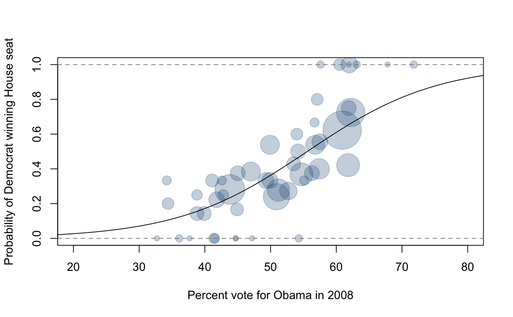

houserace10.RdElection results for the 2010 U.S. House of Represenatives races
houserace10
A tibble with 435 observations on the following 24 variables.
Unique identifier for the race, which does not
overlap with other 2010 races (see govrace10 and
senaterace10)
State name
State name abbreviation
District number for the state
Name of the winning candidate
Percentage of vote for winning candidate (if more than one candidate)
Party of winning candidate
Number of votes for winning candidate
Name of candidate with second most votes
Percentage of vote for candidate who came in second
Party of candidate with second most votes
Number of votes for candidate who came in second
Name of candidate with third most votes
Percentage of vote for candidate who came in third
Party of candidate with third most votes
Number of votes for candidate who came in third
Name of candidate with fourth most votes
Percentage of vote for candidate who came in fourth
Party of candidate with fourth most votes
Number of votes for candidate who came in fourth
Name of candidate with fifth most votes
Percentage of vote for candidate who came in fifth
Party of candidate with fifth most votes
Number of votes for candidate who came in fifth
Data was collected from MSNBC.com on November 9th, 2010.
This analysis in the Examples section was inspired by and is similar to that of Nate Silver's district-level analysis on the FiveThirtyEight blog in the New York Times: http://fivethirtyeight.blogs.nytimes.com/2010/11/08/2010-an-aligning-election/
hr <- table(houserace10[,c("abbr", "party1")]) nr <- apply(hr, 1, sum) pr <- prrace08[prrace08$state != "DC",c("state", "p_obama")] hr <- hr[as.character(pr$state),] (fit <- glm(hr ~ pr$p_obama, family=binomial))#> #> Call: glm(formula = hr ~ pr$p_obama, family = binomial) #> #> Coefficients: #> (Intercept) pr$p_obama #> -5.726 0.103 #> #> Degrees of Freedom: 49 Total (i.e. Null); 48 Residual #> Null Deviance: 107.4 #> Residual Deviance: 48.72 AIC: 138.7x1 <- pr$p_obama[match(houserace10$abbr, pr$state)] y1 <- (houserace10$party1 == "Democrat")+0 g <- glm(y1 ~ x1, family=binomial) x <- pr$p_obama[pr$state != "DC"] nr <- apply(hr, 1, sum) plot(x, hr[,"Democrat"] / nr, pch = 19, cex = sqrt(nr), col = "#22558844", xlim = c(20, 80), ylim = c(0, 1), xlab = "Percent vote for Obama in 2008", ylab = "Probability of Democrat winning House seat")